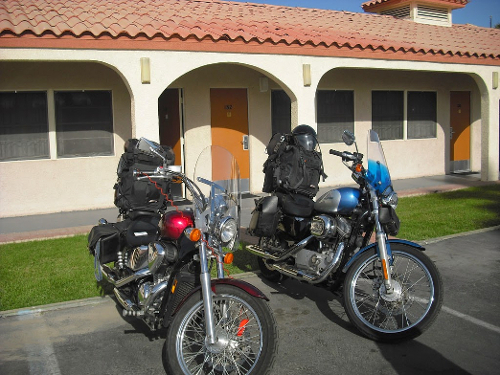

I owned a Honda Shadow VLX Deluxe until I had a very serious motorcycle accident, and my motorcycle was totaled. I survived the accident with several broken bones and severve nerve damage to my right shoulder; therefore, I am now unable to ride a motorcycle. I was heartbroken the day I realized I couldn't ride anymore. Riding gave me a sense of calmness; all was right with the world. I miss that. I miss the excitement of taking a curve just right; the perfect lean. My trip to Arizona to see Sue was a highlight in my life. I miss being on the road.
